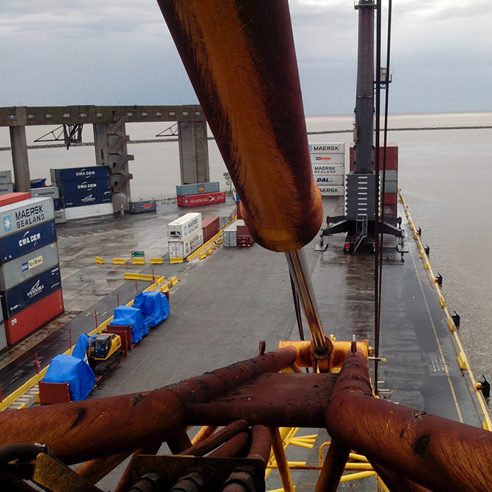

Proyectos seleccionados | Actividad como trabajador por cuenta propia
(desde el año 2014 hasta el año 2022 en Argentina):
(desde el año 2014 hasta el año 2022 en Argentina):
2022 | Metalúrgica | Planta Pacheco | Argentina
TENARIS ~ SIDERCA SAIC
Análisis, detección de fallas, reparación y puesta en funcionamiento de Travelift MI-JACK MJ20.
2021-2022 | Deposito Fiscal & Logística | Puerto de Dock Sud | Argentina
DEFIBE SA ~ DEPOSITO FISCAL BERAZATEGUI
Revamping completo de sistema electrónico para control total de reach stacker KALMAR DRF450 (control hidráulico, transmisión y motor). Desarrollo e instalación sobre PLC IFM. Implementación de red can bus j1939 y can open.
2021 | Construcción Civil & Dragados | Obra Roque Pérez | Argentina
PENTAMAR SA ~ UTE RIO SALADO
Análisis, diagnostico y resolución de fallas in situ en dragas (con parada operativa por falla desconocida, en obra de dragado del Rio Salado, locación Roque Pérez, Bs As): Draga IHC BEAVER 50 y draga DAMEN CSD500.
2020-2021 | Fábrica de automóviles | Sede Campana | Argentina
TOYOTA ARGENTINA SA & WORKTECH SRL
Desarrollo de automatización utilizando PLC marca Toyopuc (a solicitud de Toyota), para célula de línea de producción de conformado de chapistería de Hilux. Implementación y puesta en marcha in situ Toyota Argentina - Planta Campana.
2019-2022 | Salvamento marino & Dragados | Obra Roque Pérez | Argentina
SERVIMAGNUS SA
Revamping completo de sistema electrónico de control en Draga ‘Micaela’ de origen chino (marca Shen Zhou Machinery), tipo cortador de diámetro de 2mt., y potencia de generación mayor a 2300 HP. Se utilizaron PLCs Panasonic, con un PLC central (cabina timonel) y dos secundarios en forma de esclavo en la sala de máquina, estando los tres interconectados por medio de una red con periferia descentralizada, pantalla con SCADA en el timonel y pantalla secundaria a modo HMI en sala de máquina (draga operativa Obra de dragado del Rio Salado, locación Roque Pérez, Bs As).
Además se han realizando diversos trabajos de mejoras en remolcadores y dragas de la empresa.
2017-2018 | Distribuidora de energía eléctrica de media y baja tensión | Sede Garín | Argentina
EDENOR SA
Asistencia técnica, desarrollo e implementación de mejoras de arrolladora de carretes de cables de media y alta tensión. Desarrollo de sistema de control con PLC Panasonic, variadores de velocidad Eura y medición de largo (metros) en forma discreta con sensores inductivos y rueda de diámetro 1 metro (detección de cuadratura 90 grados).
2016-2017 | Impresión y estampado en líneas rotativas de papel continuo | Sede C.A.B.A. | Argentina
ADEPHEL SA (actual CTI Invest)
Asistencia técnica y en programación. Desarrollos en PLC Delta y pantallas Wintek, para aplicación de sistemas de control para el manejo de servomotores en tracción y posicionamiento.
Formación de personal de mantenimiento en electrónica y sistemas de control basados en programación discreta.
2016-2021 | Logística & Terminal Portuaria | Puerto de Campana | Argentina
EUROAMERICA PORT COMPLEX SA
Desarrollo e implementación de sistema de control electrónico para transmisión (ZF) en pala mecánica de 3m3 de carga.
Asistencia técnica y mantenimiento correctivo y preventivo eléctrico y electrónico en maquinas móviles reach stacker BELOTTI B91 y KONECRANES SMV4532, también grúas GROVE RT745, GROVE RT755 y XMG QY75KC 75tn.
Además se han realizando diversos trabajos de mejoras en grúas y máquinas móviles de la empresa.
2016-2017 | Correo & Logística | Depósito Avellaneda | Argentina
ANDREANI LOGISTICA SA
Asistencia técnica en formación de conocimientos teórico-prácticos para el personal afectado al área de mantenimiento de los equipos. Análisis de electrónica Curtis y EV100 General Electric.
Generación de 2 libros conceptuales y operativos en el campo de la electrónica aplicados a maquinas móviles eléctricas usadas dentro de la empresa, que permitieran al personal de mantenimiento el análisis y la confección de informes tipo ‘troubleshooting’ para la búsqueda de fallas.
2014 | Terminal Portuaria | Puerto de Buenos Aires | Argentina
TERMINAL 4 SA (APM TERMINALS ~ GROUP MAERKS)
Soporte complementario en el mantenimiento preventivo eléctrico y electrónico sobre PLC Siemens S7-400 en grúas RTG-KONECRANE (Rubber Tyred Gantry).
Acondicionamiento de cámaras y relevamientos técnicos para desarrollos electrónicos de aplicación especificas.
2014 | Metalmecánica | Fábrica Martínez | Argentina
TER SRL
Análisis, detección de fallas y reparación de máquinas para la conformación de engranajes, talladora LORENZ LS 200 y creadora PFAUSTER P500.
2014-2022 | Fabricación de engranajes | Fábrica Caseros | Argentina
METALURGICA GRATANI
Migración de máquinas de arrastre de virutas a PLC (CNC, rectificadoras creadoras, talladoras, etc.) Desarrollos de ingeniería, implementación y puesta en marcha. Aplicación de sistemas de control sobre soportes de PLCs Panasonic y pantallas HMI gráfica TFT (Wintek) aplicados a diferente procesos de fabricación de engranajes.
- Talladoras: LORENZ SN14 y LORENZ LS200
- Creadoras: PFAUSTER P251, PFAUSTER P200 Y LIEBERT 200
- Fresadora: HURTZ doble eje
- Roladora: OEM desarrollada por ZF Ag
